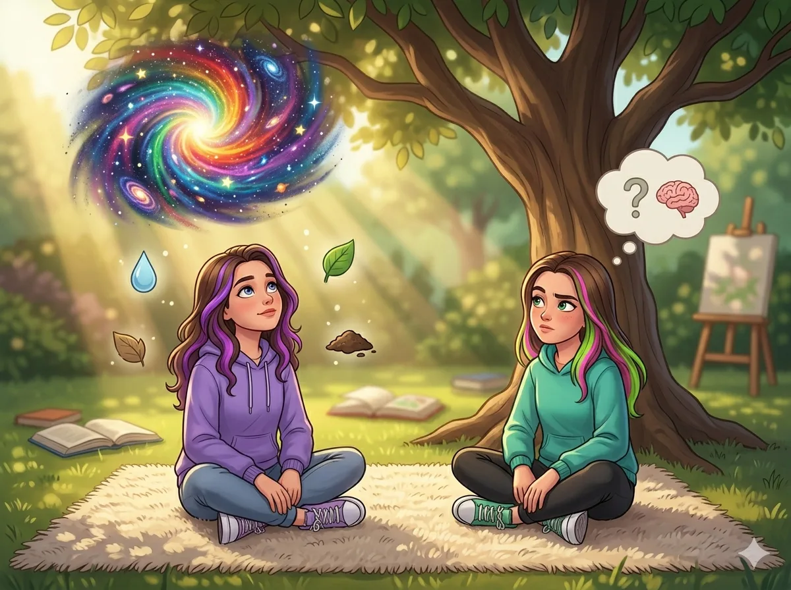
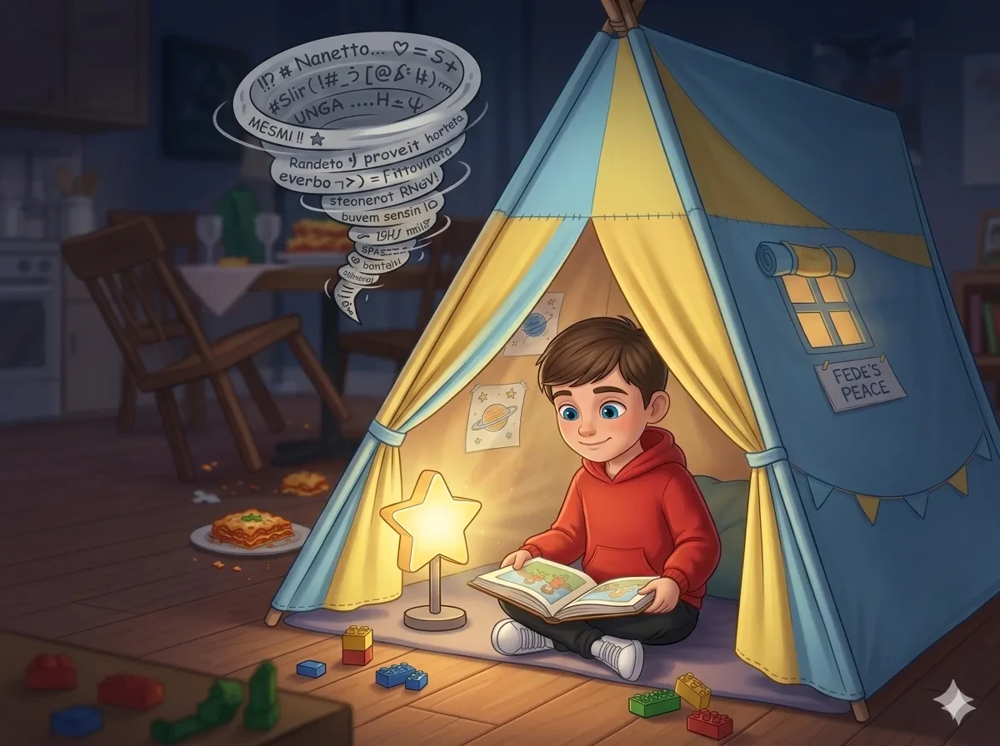
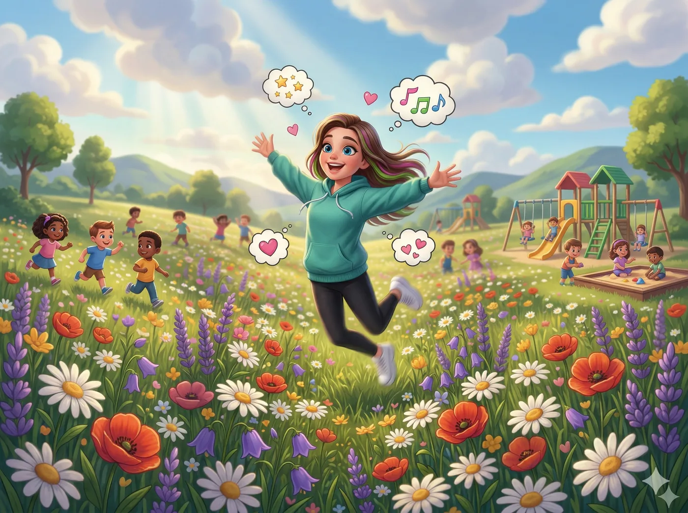
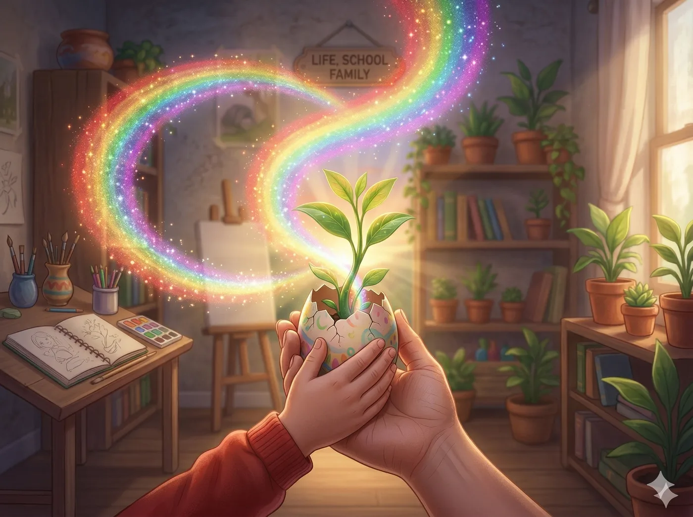

C’è una domanda che mi ronza in testa ogni volta che si avvicina una festività: come si trasmette il senso del sacro senza trasformarlo in un dogma calato dall'alto? Come si fa a raccontare la Fede senza dire "io la penso così e quindi devi farlo anche tu"?
In una famiglia come la nostra, dove la neurodiversità è il pane quotidiano, la risposta non arriva mai da un manuale. Arriva dai discorsi in auto o davanti a un pacchetto di patatine.

Dio e il Big Bang: Due visioni (e un sopracciglio alzato)
Qualche tempo fa, parlando con delle amiche che seguono una visione creazionista, le mie figlie hanno tirato fuori la loro "teologia" personale.
Alla domanda “Cosa c’entra Dio col Big Bang?”, le risposte mi hanno lasciato senza fiato.
Beatrice (APC), con la sua profondità silenziosa, ha risposto che per lei Dio è stato il Big Bang. Lo percepisce ovunque: nell'acqua, nell'aria, nella terra. Una visione panteista, poetica, diffusa.
Ginevra (ADHD), invece, ha alzato un sopracciglio e, serissima, ha sentenziato: "Mamma, durante il Big Bang Dio non esisteva ancora. Dio ha iniziato a esistere quando l’uomo ha iniziato a pensare a Lui".
Ecco.
In quel momento ho capito che il mio compito non è dare risposte preconfezionate, ma fornire le lenti per guardare il mistero.
A loro il compito di mettere a fuoco.

Raccontare il dolore con lentezza
Con Federico, la sfida è diversa.
Lui è letterale, sensibilissimo al tema della morte e della violenza.
Raccontargli i Vangeli significa camminare sulle uova.
Ho scelto la lentezza e la dolcezza, edulcorando le immagini forti della crocifissione e della corona di spine, cercando di filtrare la sofferenza attraverso la luce della speranza.
Perché con lui, le parole diventano immagini indelebili.

La fatica di fare festa (e la bellezza di perderla)
Diciamocelo: per una famiglia neurodiversa, la "festa" è una prova di resistenza. Le routine saltano, i rumori aumentano. Federico sopporta a fatica i pasti lunghi: a volte esplode in un tornado di parole inarrestabile, altre volte ha bisogno di sparire, di rifugiarsi sotto la scrivania o nella sua tenda. È il suo modo di dirci: "Il mondo è troppo forte, ho bisogno di un guscio".
E Ginevra? Lei diventa un motorino su giri altissimi. Da fuori potrebbe sembrare invadente o "maleducata", ma io so che è solo la sua gioia che non trova un contenitore abbastanza grande. È un’esplosione cinestetica che culmina nella caccia alle uova: una corsa senza regole, senza competizione, solo puro sfogo di energia.

Cosa resta della Pasqua?
Per far sì che sia davvero una festa per tutti, ho imparato a sacrificare la forma. Niente tavole da rivista, niente piatti gourmet che richiedono ore di stress in cucina. Una lasagna è più che sufficiente se significa che io posso essere presente, invece che esaurita.
Il valore che voglio trasmettere ai miei figli non è un precetto, ma una forza: la forza del perdono. Il coraggio di riprovare anche quando non si riesce, di rinascere dopo un fallimento (imparare che “fallire” è imparare e quindi fallimento non è!), di accettare che anche se oggi la nostra "batteria" è al 5%, domani è un altro giorno.
Quest’anno la nostra Pasqua è stata così: rumorosa, un po' disordinata, con qualcuno sotto il tavolo e qualcun altro che corre come il vento. Sarà una caccia al tesoro che culmina in un uovo di cioccolato e in un abbraccio di sana fatica.
Perché la Pasqua non è la perfezione della tavola, ma la bellezza di trovarsi ancora insieme, ognuno col suo codice, ognuno con la sua luce.
Buona Pasqua di rinascita a tutti voi, insegnanti, genitori e homeschooler in cammino.
Un abbraccio, Mary
